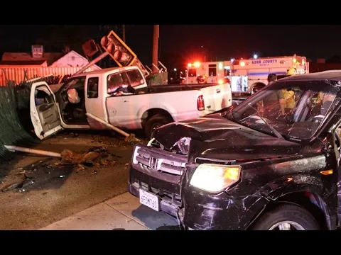
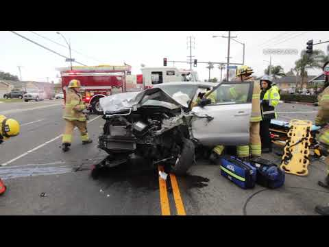

October 03, 2026
Oxnard 8-Car Pileup Driver Turns Himself In, Booked on Two Murder Counts



Headline card: The Night Desk; crash-scene stills: RMG News
It took eight days for the wreckage to be traced back to a red light. On Friday night, the driver at the center of one of Oxnard's worst crashes in years walked into the Oxnard Police Department and turned himself in.
David Mora, 29, of Santa Paula, was booked on two felony counts of murder under California Penal Code 187(A) for the Sept. 25 crash at Victoria and Doris avenues that killed two men and left five more injured, according to a booking log and a police news release reported by the Ventura County Star and the New York Post. He is being held at the Ventura County Jail on $5 million bail and is scheduled to appear in Ventura County Superior Court on Oct. 6.
What happened
Police say Mora was driving his 2018 GMC Sierra northbound on Victoria Avenue around 3:54 p.m. Friday when he ran a red light at Doris Avenue and plowed into two vehicles — a 1998 Toyota Avalon and a 2005 Honda Civic — that were traveling on a green light. The Avalon and Civic drivers, men ages 31 and 58 from Oxnard, were pronounced dead at the scene.
The initial collisions set off a chain reaction involving at least eight vehicles. Four of the involved vehicles sustained major damage; five other people were injured, four requiring hospitalization.
Traffic investigators say speed and possible impairment by alcohol and/or drugs were contributing factors, according to reporting by CBS cited in the Post. The crash shut down Victoria Avenue between Gonzales Road and Teal Club Road for hours while crews worked the scene.
The arrest
Oxnard police took Mora into custody Friday at 8 p.m., eight days after the crash, after traffic investigators gathered enough evidence to charge him with vehicular homicide. His listed occupation is engineer, and he was arrested on a Ramey warrant — a tool that lets police make an arrest before prosecutors have formally filed charges.
A note from the desk: Mora is accused, not convicted. He is presumed innocent unless proven guilty in court.
Sources: Ventura County Star (Gannett), New York Post, KTLA 5. Ventura County Star report
Source: Ventura County Star — read the original report
← Back to latest stories